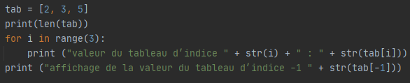
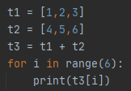
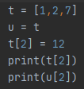
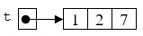
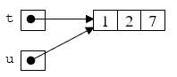
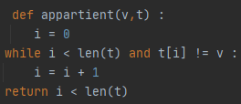
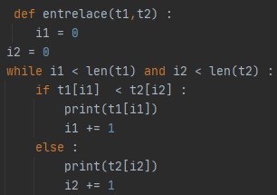

Un tableau permet de stocker plusieurs valeurs dans une seule variable et d’y accéder ensuite facilement.
Soit le programme suivant :
Exécutez le programme suivant et observez.
On obtient la taille du tableau t avec l’opération len(t)
Pour accéder à une valeur contenue dans le tableau t, il faut utiliser la notation t[i] où i désigne le numéro de la case à laquelle on veut accéder.
Les cases sont numérotées à partir de zéro. Ainsi, la valeur contenue dans la première case est t[0].
En Python, la case d’indice -1 est la dernière du tableau.
Soit le programme suivant :

Quel est le résultat attendu après l'exécution de ce programme ? Vérifiez votre réponse en testant le programme.
Le contenu d’un tableau peut être modifié. Pour cela, on utilise une affectation, exactement comme on le ferait avec une variable.
Si on doit construire un tableau vraiment grand, il existe une opération dans le langage Python : t = [0] * 1000
On obtient ici un tableau t de taille 1000 dont toutes les cases contiennent la valeur 0.
Construire un tableau de taille 200 qui contient les carrés des 200 premiers entiers.
Ecrire une fonction tableau_aleatoire(n,a,b) qui renvoie un tableau de taille n contenant des entiers tirés au hasard entre a et b.
Soit le programme suivant :
Quel est le résultat attendu après l'exécution de ce programme ? Vérifiez votre réponse en testant le programme.
Il est possible de concaténer deux tableaux, c’est-à-dire de construire un nouveau tableau contenant, bout à bout, les éléments des deux tableaux. On le fait avec l’opération +.
Soit le programme suivant :
Lorsqu’on tape l’instruction t=[1,2,7], la valeur affectée à la variable t est l’adresse mémoire de l’espace alloué au tableau. On peut représenter la situation ainsi :
Si maintenant, on tape l’instruction u=t, on se retrouve dans la situation suivante :
Autrement dit, les deux variables t et u désignent le même tableau et toute modification dans le tableau t sera visible dans le tableau u.
Ecrire une fonction copie(tab) qui prend en paramètre un tableau tab et qui renvoie une copie de ce tableau.
Vérifier qu’elle fonctionne bien.
Ecrire une fonction echange(tab,i,j) qui échange dans le tableau tab les éléments d’indices i et j.
Les chaînes de caractères offrent une certaine ressemblance avec les tableaux. En particulier, on peut obtenir la taille d’une chaîne de caractères avec la fonction len et accéder au i-ième caractère avec les crochets.
En revanche, contrairement aux tableaux, les caractères d’une chaîne ne peuvent pas être modifiés.
Ecrire une fonction ordre(m1,m2) qui prend en paramètre deux mots m1 et m2 sous la forme de chaines de caractères et qui renvoie True si m1 est avant m2 dans l’ordre du dictionnaire ou si m1 est égal à m2.
Ecrire une fonction appartient prenant en paramètre une valeur val et un tableau tab et qui renvoie True si la valeur apparait au moins une fois dans le tableau tab et False sinon.
Créez une fonction nb_occurrences qui prend en argument un tableau tab et une valeur val et qui compte le nombre d’occurrences de cette valeur dans le tableau (c’est-à-dire le nombre de fois que cette valeur apparait dans le tableau).
Testez cette fonction sur le tableau tab = [2, 3, 5, 7, 1, 3, 8, 3, 6, 3] et la valeur val = 3.
Ecrire une fonction couple qui prend en argument un tableau tab et deux valeurs a et b et teste s’il existe dans le tableau une occurrence de la valeur a immédiatement suivie d’une occurrence de la valeur b. Elle renvoie True si c’est le cas et False sinon
Ecrire une fonction couple_distant qui prend en argument un tableau tab et deux valeurs a et b et teste s’il existe dans le tableau une occurrence de la valeur a suivie d’une occurrence de la valeur b, dans cet ordre, mais pas nécessairement consécutives. Elle renvoie True si c’est le cas et False sinon.
Ecrire une fonction sous_mot(tab1,tab2) qui renvoie True si tous les éléments du tableau tab1 apparaissent dans l’ordre dans le tableau tab2 et False sinon.
Ecrire une fonction pgs(e,tab) qui renvoie la longueur de la plus grande séquence d’occurrences consécutives de l’élément e dans le tableau tab.
Ecrire une fonction pgs(tab) qui renvoie la longueur de la plus grande séquence d’éléments identiques consécutifs dans le tableau tab.
La fonction suivante renvoie True si la valeur v est présente dans le tableau t.
On prétend que la fonction suivante affiche une certaine alternance d’éléments des deux tableaux t1 et t2.
Justifier que cette fonction termine à l’aide de la technique du variant.